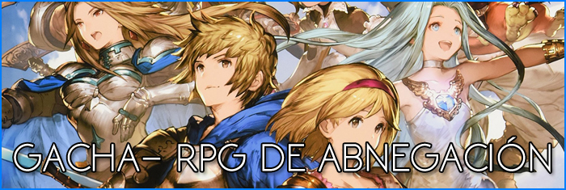

Tipo
JRPG
Los RPGs japoneses nacieron antes de las propias consolas, pero su evolución y crecimiento se encuentra totalmente ligada a éstas. Con series como Final Fantasy, Dragon Quest, Shin Megami Tensei, Tales of, Trails, Pokémon y otras tantas como referentes, cuentan con un estilo fácil de identificar.
WRPG
Esto hace que las influencias tradicionales de Dragones y Mazmorras, para ambientación típica de hechicería-espada-medievo, o Warhammer 40.000, para ambientación post-apocalíptica/futuro espacial, ya no sea tan exagerada sobre todo por la proliferación de los estudios independientes.
GACHA
Normalmente asociado a dispositivos móviles o plataformas digitales, estos RPGs se centran en el uso de energía limitada que se recupera con el tiempo y que nos sirve para realizar funciones básicas, además de contar con decenas (o incluso centenas) de posibles personajes divididos en diferente rareza que sólo se pueden lograr en un sistema de lotería
